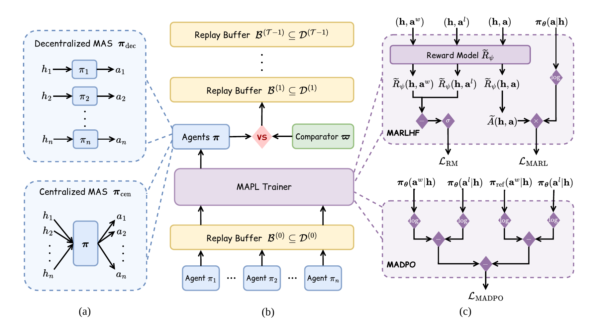

Cross-Modal Navigation with Multi-Agent Reinforcement Learning
CRONA investigates collaboration between modality-specialized agents using complementary visual and acoustic cues for embodied navigation.
Undergraduate Researcher in Multi-Agent & Multimodal AI
Computer Science + Music Technology @ Northeastern University
My work spans multi-agent reinforcement learning, embodied navigation, and LLM collaboration, with a growing interest in interactive music intelligence.
Hi, this is Xinzichen. I'm an undergraduate student at Northeastern University, pursuing a B.S. in Computer Science and Music Technology (expected May 2028). I conduct research in the Lab for Learning and Planning in Robotics, working on multi-agent and multimodal learning.
My broader goal is to explore how multiple intelligent agents can cooperate effectively across various modalities. I also enjoy exploring how these ideas extend to audio, musical interaction, and creativity.
Outside of research, I am a drummer, build music-related software, and enjoy connecting ideas from computation and creative practice.
CRONA investigates collaboration between modality-specialized agents using complementary visual and acoustic cues for embodied navigation.

Studying preference-based multi-agent learning for collaborative language-model systems, including reproducible evaluation and benchmark workflows.
Audio-to-audio and text-to-audio music retrieval using librosa features, CLAP embeddings, FastAPI, and Streamlit.
View project →Fine-tuning BERTweet for short-text sarcasm classification with class-imbalance strategies and controlled evaluations.
View project →A React and TypeScript gaming/community platform with real-time multiplayer features and end-to-end testing.
View project →Northeastern University · Multi-agent RL, embodied navigation, multimodal fusion and policy evaluation
Northeastern University · GPU/HPC research infrastructure, LLM evaluation pipelines and reproducibility
Northeastern University · Data processing, glucose trend analysis and music-technology data integration
Software Engineering Center · Chinese NLP, TF-IDF, and knowledge graphs
Experiments with gesture-controlled music interfaces using computer vision, MediaPipe, ml5.js, and real-time musical control. I am interested in collaboration between human musicians and adaptive AI agents.
Work with DSP, audio feature extraction, sound generation, and music retrieval. Future interests include preference learning for composition and interactive multi-agent music systems.
I'm interested in research collaborations and opportunities involving multi-agent learning, reinforcement learning, multimodal AI, and related systems.